There are two places to work. Most day-to-day work happens in the Staff portal. The WordPress dashboard is for the website itself: jobs, settings and user accounts.
Where
What you do there
Address
Staff portal
Review candidates and documents, send updates, record checks and references, sign candidates off, download files, add staff.
hcctemps.co.uk/staff
WordPress dashboard
Job adverts, importing jobs, deleting candidate records, website settings, About us team, user accounts.
hcctemps.co.uk/wp-admin
Candidate portal
What candidates see: their answers, documents, training and your updates. You can open it read-only with View as candidate.
hcctemps.co.uk/my-application
The life of a registration
The candidate creates an account and confirms their email with a 6-digit code.
They answer the pre-screening questions, then upload documents and training certificates. Anything they don't have yet can be marked "I don't have this yet".
When they submit, the staffing inbox gets a full summary with their CV attached.
You review in the Staff portal: approve, ask for replacements, request missing items, record checks and references.
Your changes collect in an Update tray and go to the candidate in one email when you press Send.
When everything is complete you press Finish onboarding. The candidate moves to Staff completed and gets a "ready to work" email.
Who can do what
Access
Can do
HCC Staff
Everything in the Staff portal for candidates. Sees only the last 4 digits of bank details.
HCC Manager
As Staff, plus sees bank details in full and can add staff from the Team page.
Administrator
Everything, including the WordPress dashboard (jobs, settings, user accounts, deleting records).
Staff portalLogging in
On the website, choose Log in → Staff login, or go straight to hcctemps.co.uk/candidate-login/?for=staff.
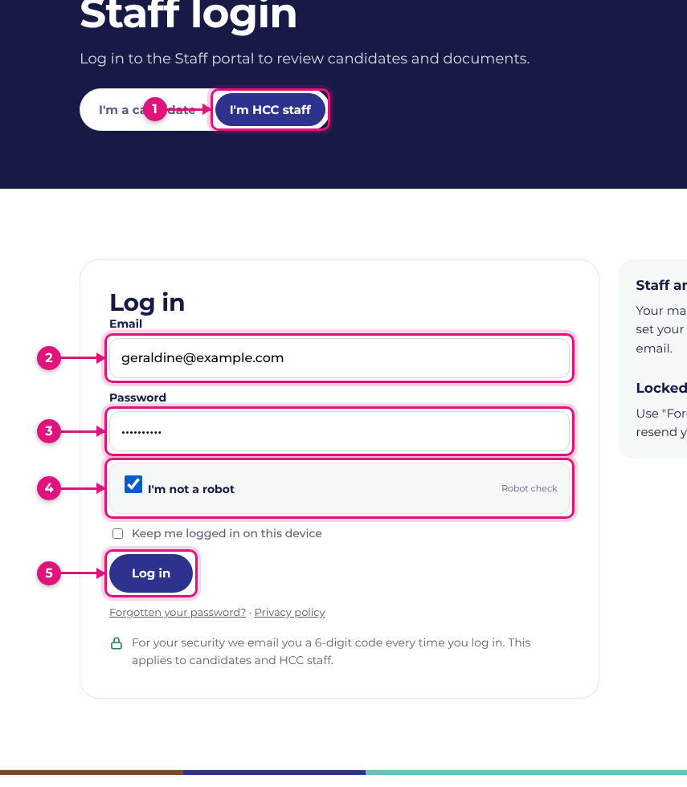
The Staff login page.
Make sure I'm HCC staff is selected at the top.
Type your work email.
Type your password.
Tick I'm not a robot. Sometimes a short sum appears here instead ("Prove your humanity"): type the answer.
Press Log in.
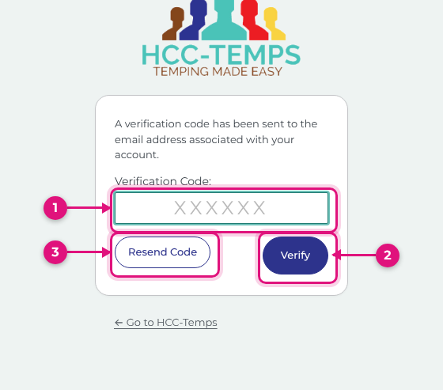
Every login asks for a code sent to your email.
Type the 6-digit code from the email "Your HCC-Temps login code". It works for 15 minutes.
Press Verify (it often logs you in on its own once the 6 digits are typed).
No email? Check spam, then press Resend Code. Only the newest code works.
TipIf you clicked a link in an email (for example "Open in Staff portal" for one candidate), you'll land on that candidate after logging in.
Staff portalThe dashboard
The first page after logging in. Go back to it any time with Dashboard in the dark blue bar.
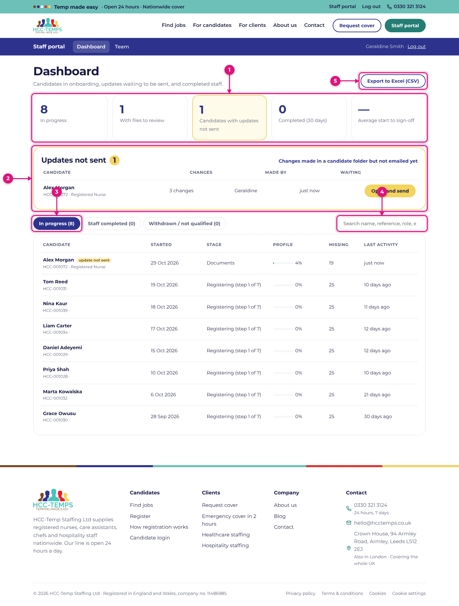
Dashboard.
Figures at a glance: candidates in progress, candidates with files to review, candidates with updates not sent, completed in the last 30 days, and the average days from registering to sign-off.
Updates not sent: candidates where someone made changes (approvals, replace requests, notes) but hasn't pressed Send yet. It shows who made the changes and how long they've waited. Press Open and send. Nothing is ever emailed to a candidate automatically.
Tabs: In progress, Staff completed, and Withdrawn / not qualified. Click a candidate's row to open their folder.
Search by name, reference, role, email or phone, then press Enter.
Export to Excel (CSV) downloads the list in the current tab.
Tags on a row"possible duplicate" means another record has the same NI number or phone number. "update not sent" means the tray has unsent changes.
Staff portalA candidate's folder
Everything about one candidate is on one page: documents and training on the left, then answers, the update tray, checks, references, declaration, bank details, notes and the activity log on the right. Use Expand all / Collapse all to open or fold every section.
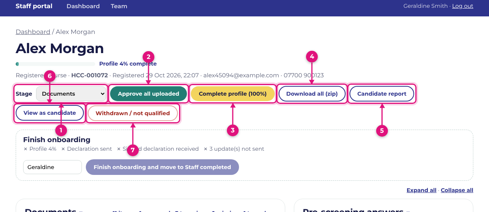
The buttons at the top of the folder.
View as candidate: opens their portal read-only in a new tab, exactly as they see it.
Approve all uploaded: approves every document that is uploaded and waiting for review.
Complete profile (100%): approves what's uploaded, then asks you to override each remaining item one at a time, with a reason and a note (see Mark complete).
Download all (zip): every file in checklist order, plus a summary page.
Candidate report: everything on one printable page.
Stage: a label for where the candidate is (New registration, Documents, Checks in progress, Ready to work). Changing it saves straight away.
Possible duplicateIf a pink box says "Possible duplicate", open the other record to check. If it's a different person, press Checked: not a duplicate.
Staff portalReviewing documents
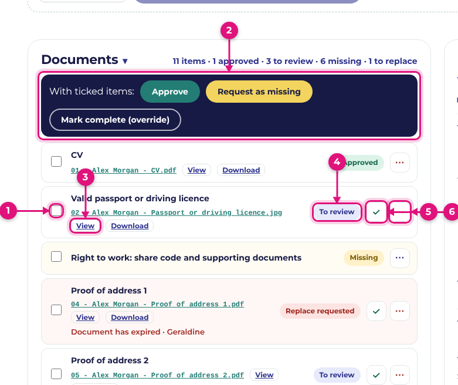
Documents. Training certificates work the same way, in the folder below.
Tick boxes: tick several items to act on them together.
With ticked items: Approve (only items that have a file), Request as missing, or Mark complete (override).
View opens the file in a new tab. Download saves it. Both are recorded in the activity log.
Status: To review, Approved, Replace requested, Requested, Missing, Completed by staff, Not needed.
✓ approves this one document.
⋯ opens more actions for this document.
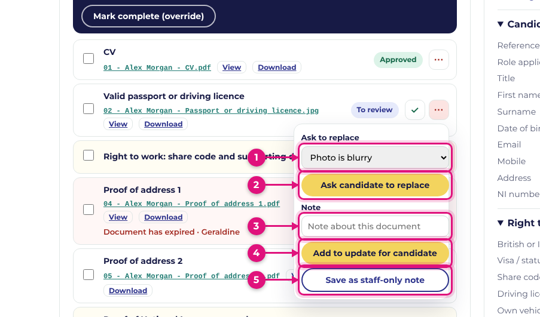
The ⋯ menu on a document.
Choose why it needs replacing (blurry, corners cut off, expired, name doesn't match, wrong document, both sides needed).
Ask candidate to replace adds the request to the update for the candidate.
Type a note about this document.
Add to update for candidate: the note goes to the candidate in the next update email, and shows on that document in their portal.
Save as staff-only note: never shown to the candidate.
When a candidate replaces a fileThe document goes back to "To review", the old file is kept (the new one is named "(v2)"), and the staffing inbox gets one "[DOCUMENTS]" email listing everything they uploaded in that visit.
Staff portalThe update email to the candidate
Approvals, replace requests, missing items and notes for the candidate all collect in the Update for [name] card at the top right. They go in one email when you press Send. Nothing is sent automatically.
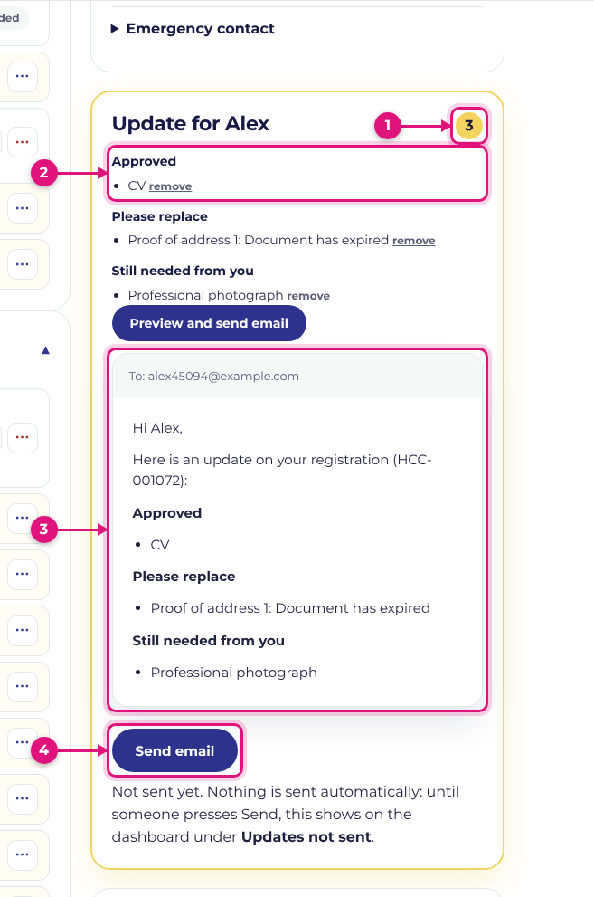
The update tray with the email preview open.
The number of changes waiting.
The changes, grouped. Press remove next to one to take it out of this email (the approval itself stays).
Preview and send email shows exactly what the candidate will receive.
Press Send email. The update also appears in the candidate's portal and in the Sent to candidate card.
Don't forget to sendUnsent changes show on the dashboard under Updates not sent until someone presses Send. You can't finish onboarding while changes are unsent.
Staff portalMark complete (override)
Use this when an item is satisfied without an upload, for example you saw the original passport in the office, or a document isn't needed for this candidate. You'll be asked about each item in turn.
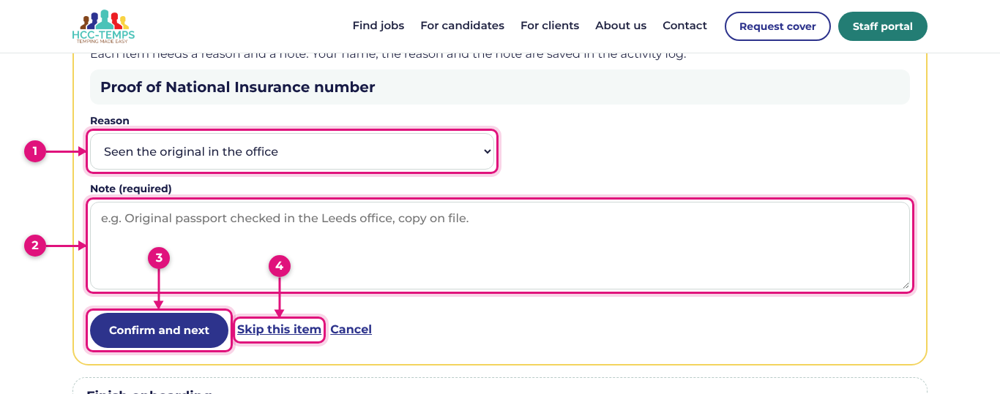
Overriding one item at a time.
Choose the reason.
Write a note. This is required, for example "Original passport checked in the Leeds office, copy on file".
Confirm and next moves to the next item.
Skip this item leaves it as it is.
Your name, the reason and the note are saved in the activity log. Optional items ("where applicable") that weren't provided aren't counted, so you won't be asked about them.
Staff portalChecks, references and declaration
Checks
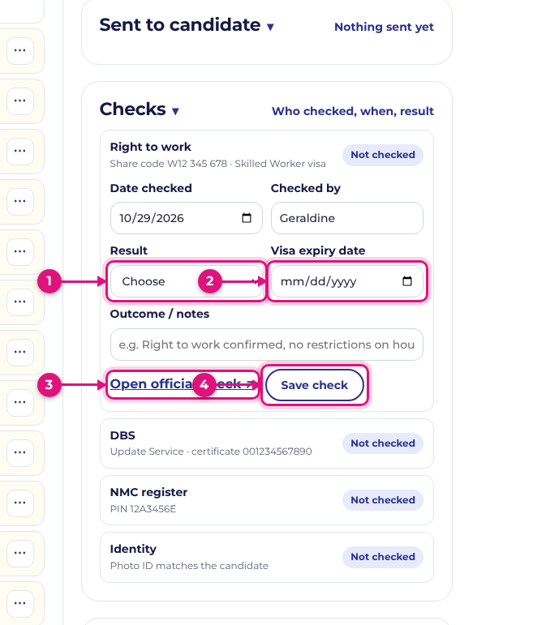
Right to work, DBS, NMC register (nurses) and identity.
Open a check, then choose the Result: Pass, Fail or Follow-up needed.
Fill in the visa expiry date (right to work, non-British candidates) and the outcome or notes.
Open official check opens the government or NMC website in a new tab.
Press Save check. The date and your name are filled in for you.
References
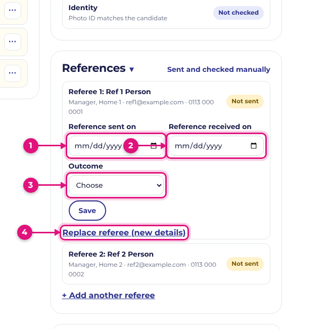
The two referees the candidate gave, recorded by hand.
The date you sent the reference request.
The date it came back.
The outcome (Satisfactory, Concerns, Not received), then Save.
Replace referee if one doesn't reply (the old one is kept in the history), or + Add another referee.
Declaration
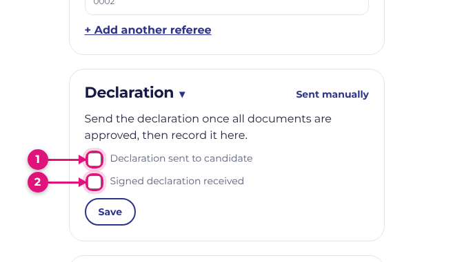
The declaration itself is sent manually; record it here.
Tick Declaration sent to candidate when you send it.
Tick Signed declaration received when it comes back, then press Save.
Staff portalNotes and the activity log
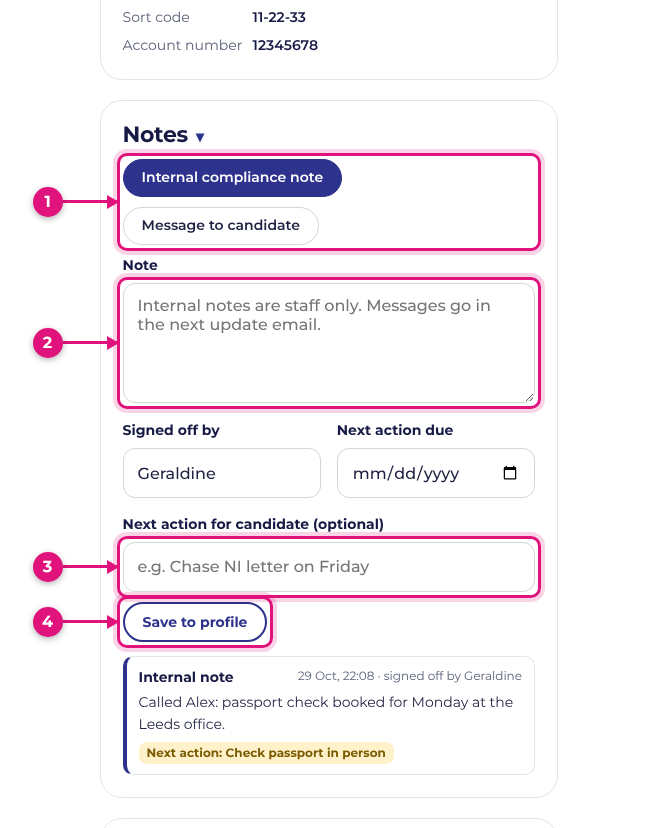
Notes about the whole application.
Choose Internal compliance note (staff only) or Message to candidate (goes in the next update email).
Write the note.
For internal notes you can add who signed it off, the next action and when it's due. These are optional.
Press Save to profile.
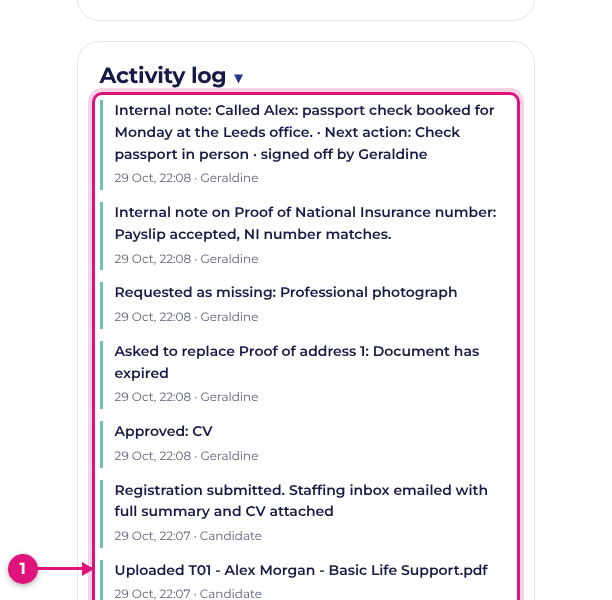
The activity log, newest first.
Everything is recorded with the date, time and who did it: uploads, replacements, logins, approvals, notes, checks, emails sent, views and downloads of files, and email changes.
Staff portalChanging a candidate's email
If a candidate typed their email wrongly or has a new one, they can fix it themselves:
While registering: on the "Check your email" step, Wrong email address? Change it.
After registering: in their portal, under My answers, Change my email address. A code is sent to the new address.
If they phone you instead, change it from their folder:
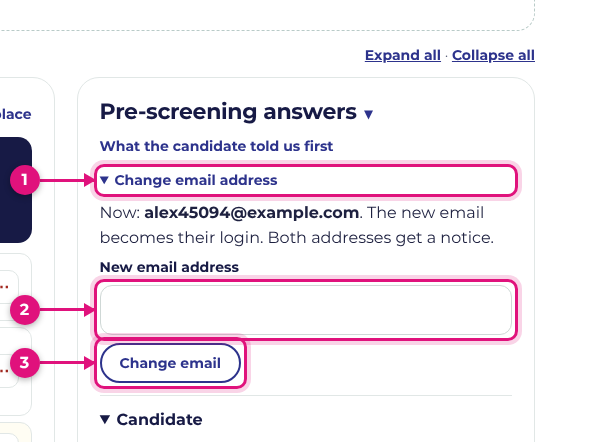
At the top of Pre-screening answers.
Open Change email address.
Type the new email.
Press Change email. It becomes their login straight away. The old and new addresses both get a short notice, and it's written in the activity log.
Staff portalFinishing onboarding, or closing
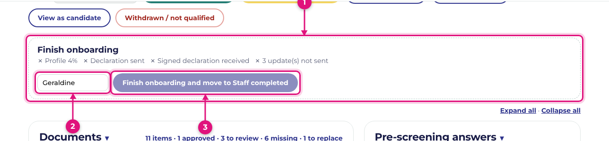
The Finish onboarding box shows what's still needed.
Each condition shows ✓ or ✗: profile 100%, declaration sent, signed declaration received, no unsent updates.
The name of the person signing off.
When everything is ✓, press Finish onboarding and move to Staff completed. The candidate gets a "ready to work" email.
Made a mistake?On a completed candidate, press Move back to in progress. The sign-off is removed and the change is logged.
Withdrawn / not qualified
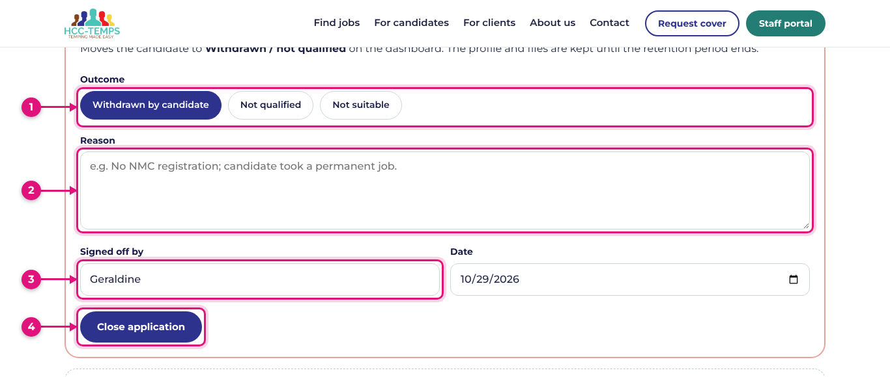
Closing an application.
Choose the outcome: Withdrawn by candidate, Not qualified, or Not suitable.
Write the reason.
Your name (signed off by) and the date.
Press Close application. The candidate moves to the Withdrawn / not qualified tab and their portal becomes read-only. Reopen application brings them back.
Staff portalViewing and downloading files
One file: in the Documents list, View opens it in a new tab and Download saves it.
Everything:Download all (zip) at the top of the folder. You get a folder named "HCC-001072 Alex Morgan - Registered Nurse" with documents numbered in checklist order (01 - Alex Morgan - CV.pdf…), a Training subfolder, and a summary page.
Printable summary:Candidate report.
Where are the files kept?Candidate documents are stored in a private folder on the website. They are not in the WordPress Media Library, and there's no public link to them. Always open them through the Staff portal: every view and download is logged. Managers see bank details in full in reports and zips; staff see the last 4 digits.
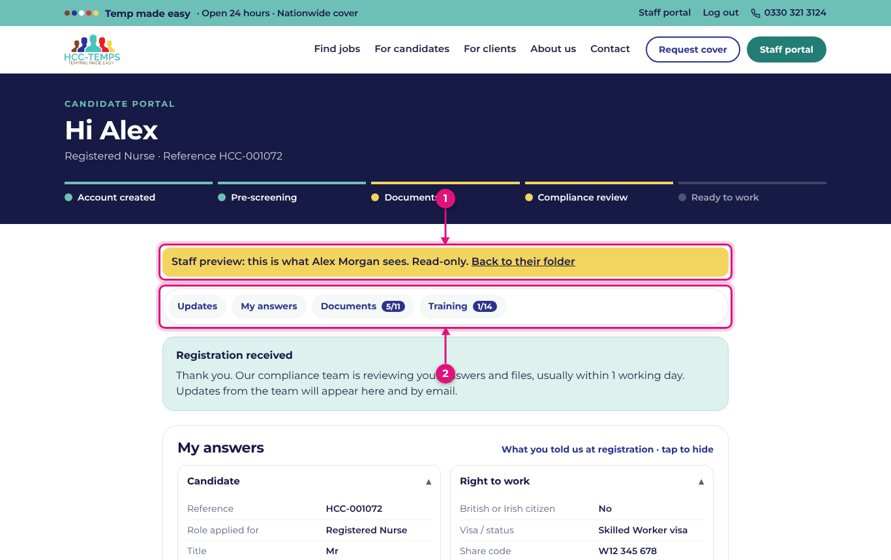
View as candidate.
The yellow bar shows it's a read-only staff preview. Back to their folder returns you.
The candidate's quick-jump bar: Updates, My answers, Documents, Training.
Staff portalAdding staff to the Staff portal
Managers can add staff without going into WordPress.
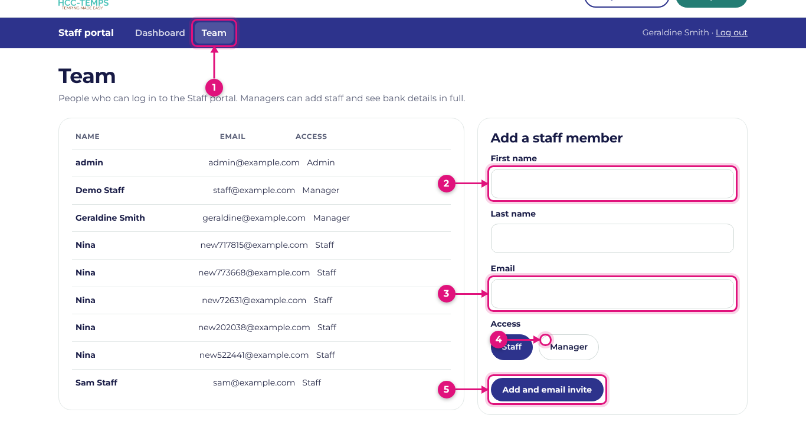
Team.
Open Team in the dark blue bar (managers only).
First name (and last name).
Their work email.
Staff or Manager (managers see bank details in full and can add staff).
Press Add and email invite. They get an email with a link to set their password, then log in at Staff login with an emailed code.
WordPress dashboardGetting into the WordPress dashboard
Go to hcctemps.co.uk/wp-admin and log in with your administrator account. The menu down the left side has the parts you'll use:
Menu
What it's for
Job Board
Job adverts: All jobs, Add new job, Sectors, Job types, Locations, Contracts, Job status, Import jobs (CSV).
Candidates
A simple list of candidate records with a link to each one in the Staff portal. Used to delete records.
Team
The people shown on the About us page.
Pages
The website pages. Their layout comes from the theme.
Appearance → Customize
Phone, emails, staffing inbox, homepage figures, links and other settings.
Users
Accounts and access levels.
WordPress.comOn WordPress.com the dashboard has an extra WordPress.com menu and may look slightly different from these screenshots. The menu items named here are the same.
WordPress dashboardJob Board: add, change, close
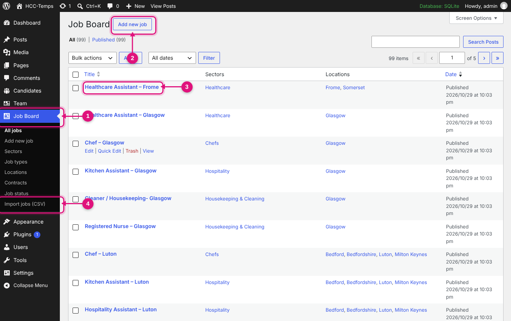
Job Board → All jobs.
Job Board in the left menu.
Add new job to create one.
Click a job's title to change it.
Import jobs (CSV) to add or update many jobs from a spreadsheet (next page).
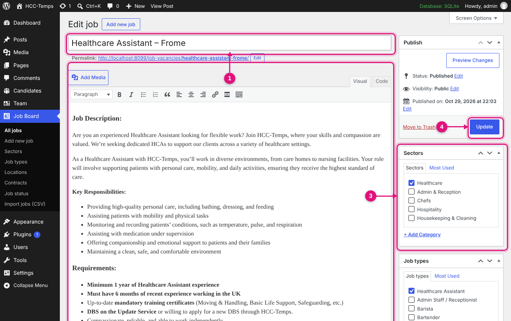
Editing a job.
The job title, as shown on the site.
The description: what they'll do, what they need, what they get.
Tick the Sector on the right, and below it the Job type, Location and Contract. Use "+ Add" to create a new one, for example a new town.
Press Publish (new job) or Update (existing job).
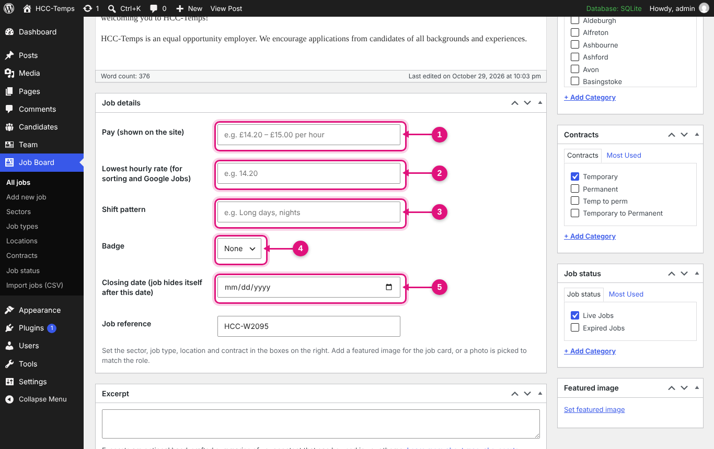
The Job details box, under the description.
Pay as shown on the site, e.g. "£14.20 – £15.00 per hour".
The lowest hourly rate as a number, e.g. 14.20. Used for "sort by pay" and Google Jobs.
Shift pattern, e.g. "Long days, nights".
Badge: New or Urgent.
Closing date: the job disappears from the site by itself after this date.
To close a job
Either set a closing date in the past, or in Job status (right side) tick Expired Jobs instead of Live Jobs and press Update. Closed jobs stay in the dashboard so you can reopen them later. Move to Trash removes a job completely.
WordPress dashboardImporting jobs from a spreadsheet
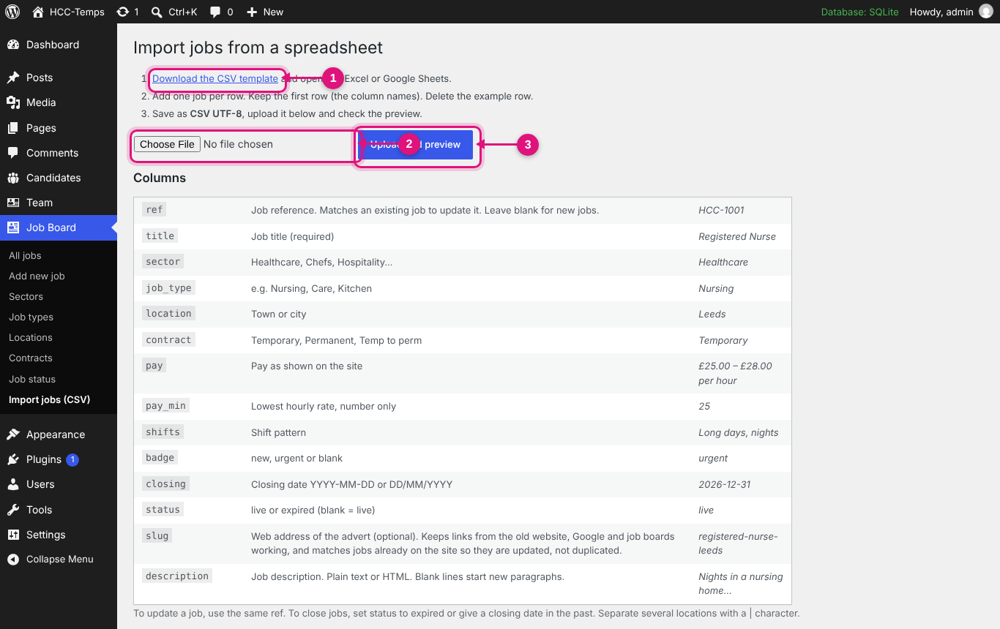
Job Board → Import jobs (CSV).
Download the CSV template and open it in Excel or Google Sheets. Keep the first row (column names); one job per row.
Save as CSV UTF-8, then choose the file.
Press Upload and preview. The preview shows each row as New, Update or Skip (with the reason). Press Import to finish.
Updating, not duplicatingA row with the same ref (or the same web address in the slug column) as an existing job updates that job. To close jobs, put expired in the status column. Several locations go in one cell separated by |, e.g. "Leeds | Bradford".
WordPress dashboardDeleting a candidate
For test registrations, duplicates, or someone who needs to start again (for example "There is already an account with this email" and they can't get in).
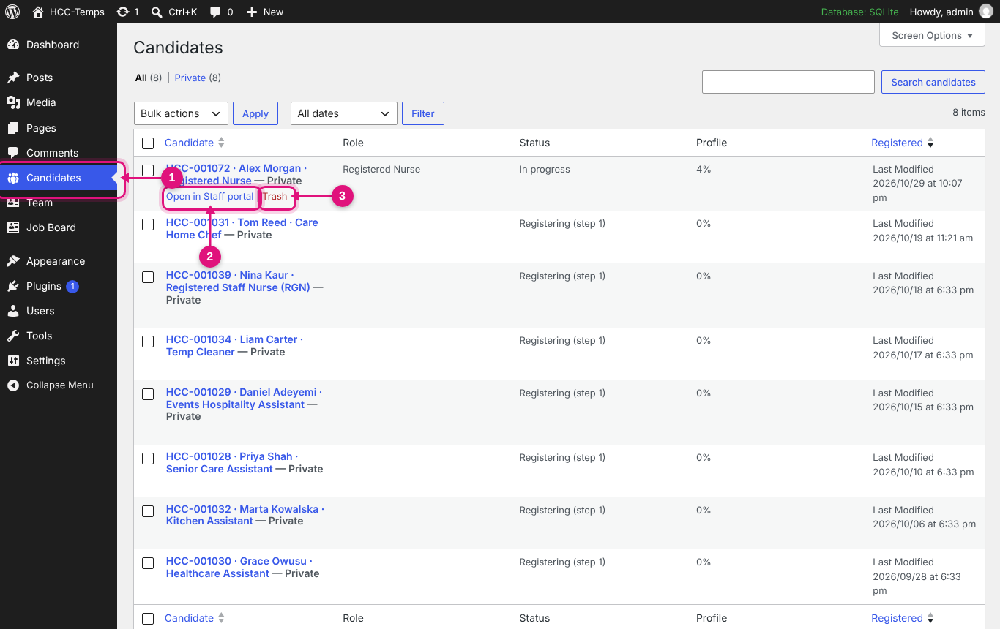
Candidates in the left menu.
Open Candidates in the left menu.
Hover over the candidate. Open in Staff portal takes you to their folder.
Press Trash.
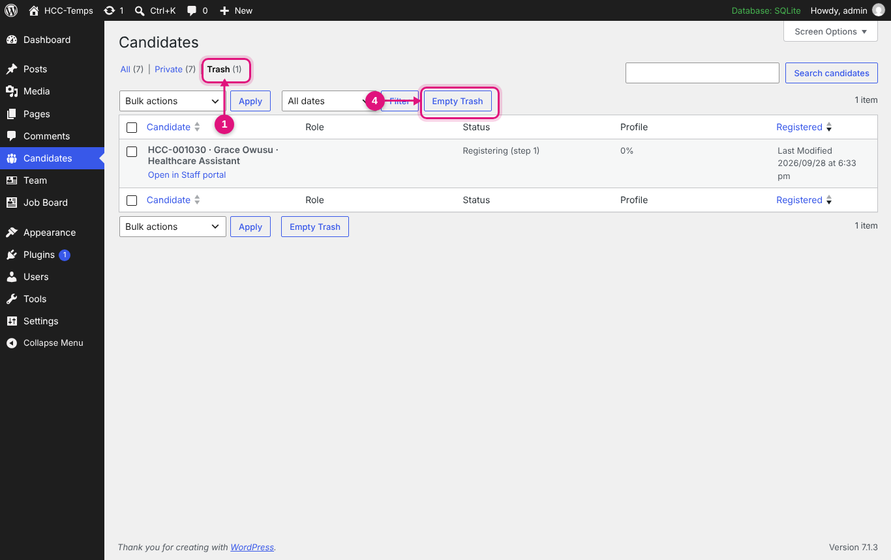
Candidates → Trash.
Click Trash at the top of the list.
Restore brings a record back if it was a mistake.
Delete Permanently removes the record, all their uploaded files and their login. The email can then be used to register again.
Empty Trash permanently deletes everything in the trash.
Trash alone is not enoughA candidate in the Trash still has a login, so their email still says "already registered". Permanent deletion can't be undone: download the zip first if you need to keep anything.
WordPress dashboardAdmin access and login codes
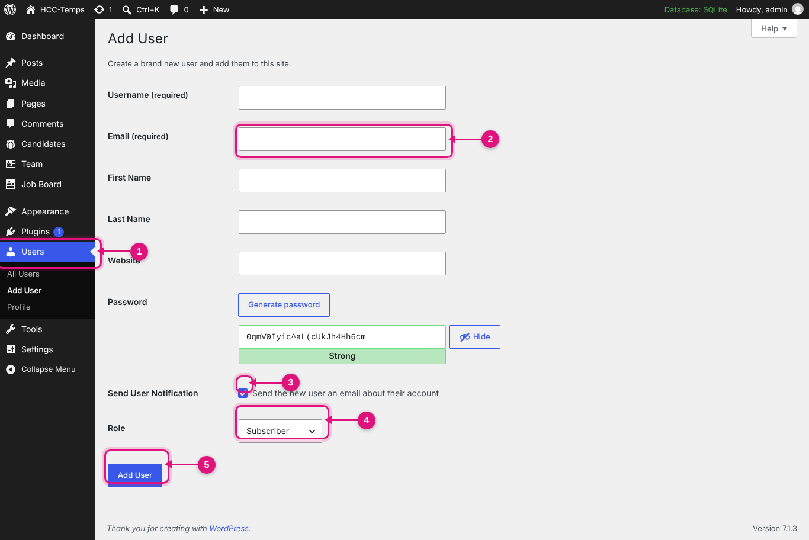
Users → Add New User.
Users → Add New User.
Username and email (use their work email for both).
Tick Send the new user an email about their account so they can set a password.
Choose the Role: Administrator (everything), HCC Manager or HCC Staff (Staff portal only).
Press Add New User.
Login codes (two-step verification)
HCC Staff, HCC Managers and candidates always get a 6-digit code by email at login. This needs the free Two Factor plugin to be active (Plugins menu). If it's switched off, a red notice appears in the dashboard.
Administrators can turn the same code on for themselves: Users → Profile → Two-Factor Options → Email.
Removing someone's access
Users → All Users, hover over the person, then Delete (WordPress asks what to do with any content they wrote; choose to give it to another administrator). To change someone's level, edit the user and change Role.
WordPress dashboardWebsite settings (Customize)
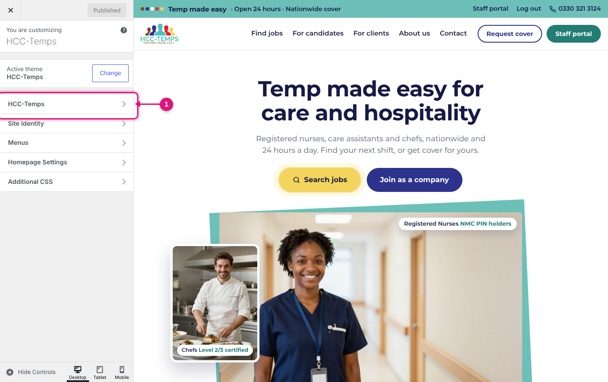
Appearance → Customize.
Open the HCC-Temps panel.
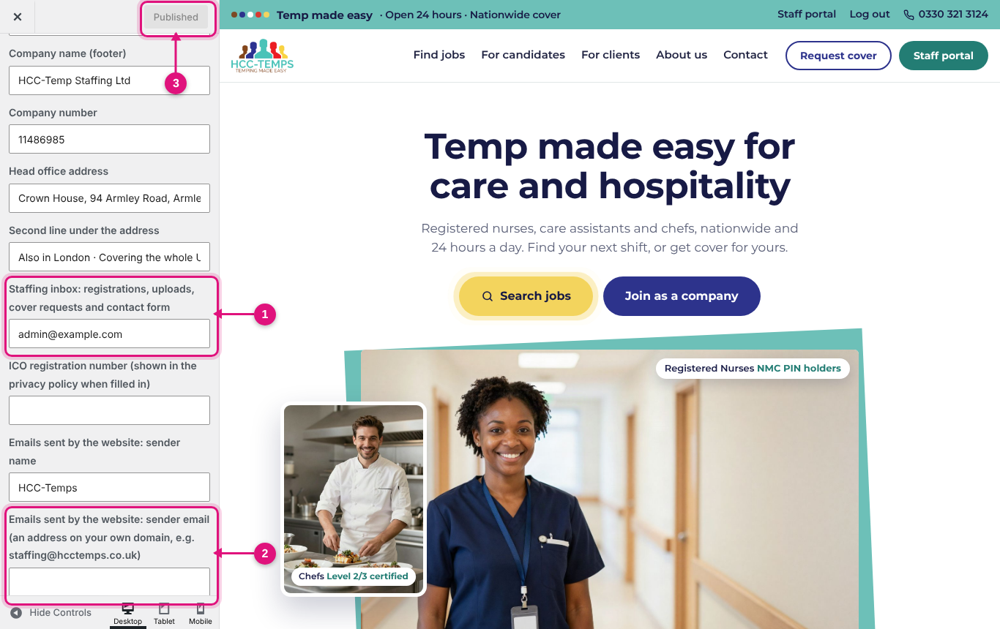
HCC-Temps → Contact details and emails.
Staffing inbox: where registrations, uploads, cover requests and contact messages go. Candidates' replies also go here.
Sender name and email: who website emails come from, e.g. "HCC-Temps" and staffing@hcctemps.co.uk.
Press Publish to save.
Section
Settings
Contact details and emails
Slogan, phone, public email, company name and number, addresses, staffing inbox, ICO number (shown in the privacy policy), sender name and email, Google Analytics ID.
Homepage
Hero heading and text, the four figures, Trustpilot link, home care (HCC Care & Support) link.
Social links
X, LinkedIn, Instagram, Facebook.
Robot check
Cloudflare Turnstile keys (optional). Without them, a simple "I'm not a robot" tick is used.
WordPress dashboardTeam members on About us
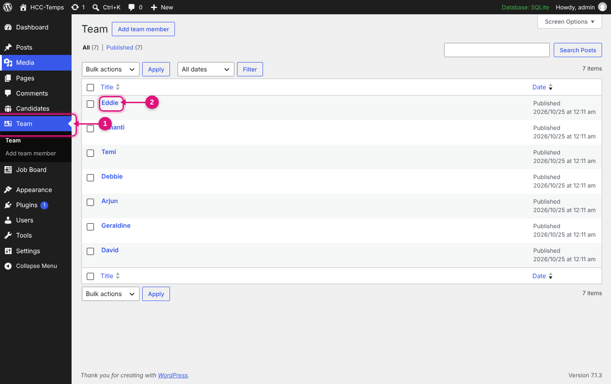
Team in the left menu.
Open Team. Use Add New at the top for someone new.
Click a name to change it. The title is their first name. Fill in Role (e.g. Compliance Manager), set the Photo on the right, and use Order (Page attributes) for their position: 1 shows first. Press Update.
To remove someone, press Trash under their name.
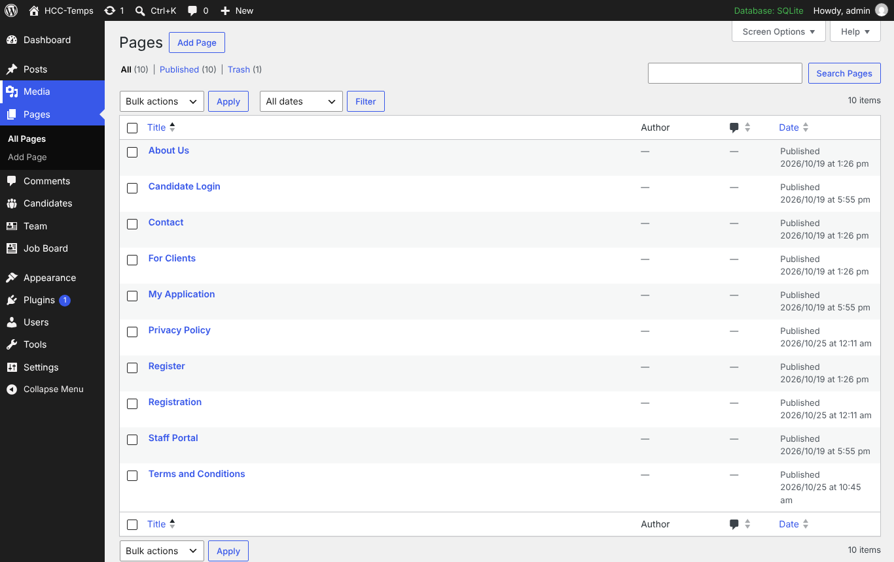
Pages: the website pages. Their layout and wording come from the theme. Ask your web developer to change the wording on Privacy Policy and Terms.
ReferenceAutomatic emails and reminders
Email
Goes to
When
Your HCC-Temps code
Candidate
When they create an account (or change email while registering).
Welcome
Candidate
After they confirm their email.
Your registration is nearly done
Candidate
Automatic reminders if they haven't submitted: 24 hours and 3 days after registering.
We have your registration
Candidate
When they submit.
[REGISTRATION] full summary + CV
Staffing inbox
When they submit.
[DOCUMENTS] uploaded…
Staffing inbox
After they upload in the portal: 10 minutes after their last upload, or straight away when they press "I've finished uploading".
Update on your registration
Candidate
Only when staff press Send email in the update tray.
You're ready to work
Candidate
When staff press Finish onboarding.
Email changed notices
Old (and new) address
When an email is changed in the portal or by staff.
[COVER REQUEST] / [CONTACT]
Staffing inbox, and a copy to the sender
From the Request cover and Contact forms.
Your HCC-Temps login code
Whoever is logging in
Every login (candidates and staff).
"Updates not sent" is your reminderThere is no automatic reminder for staff. The dashboard's Updates not sent box shows every candidate with unsent changes and how long they've waited (in red after a day).
ReferenceTroubleshooting
A candidate typed the wrong email when registering
On the "Check your email" step they press Wrong email address? Change it and a new code goes to the right address. If they've closed the page, change it for them in their folder (Changing a candidate's email), then they log in with the new email.
A candidate says the code didn't arrive, or "That code isn't right"
Check spam or junk.
Use send a new code. Wait 30 seconds between requests, and only the newest code works.
After 5 wrong tries the code locks; sending a new code unlocks it.
The activity log in their folder shows each code sent and why one was refused.
"There is already an account with this email"
They already registered. They should use Log in, or Forgotten your password? (both links appear under the message). If they need to start again from scratch, delete the old record permanently (Deleting a candidate).
Someone forgot their password
On the login page, Forgotten your password?, then enter their email. They get a reset link. This works for candidates and staff.
A staff member isn't getting the login code
Check spam. Check the Two Factor plugin is active (Plugins). Check their email in Users is right. They can press Resend Code.
"Too many attempts. Please wait a while or call us."
The website limits repeated form attempts from one internet connection to stop spam. It clears by itself within an hour.
An upload fails
Files must be PDF, JPG, PNG, HEIC or Word, up to 10MB. Phone photos are made smaller automatically. If a candidate has been away a long time, ask them to log in again.
A candidate's portal or a page looks out of date
Ask them to refresh the page. After a website update, clear the WordPress.com cache once (WordPress.com dashboard → Settings → Caching → Clear all caches).
Emails aren't arriving in the staffing inbox
Check Staffing inbox in Appearance → Customize → HCC-Temps → Contact details and emails, and check spam. If emails go to spam, the domain's email settings (SPF and DKIM) may need to be set up by whoever manages the domain.
I approved or finished something by mistake
An approval: use ⋯ → Ask candidate to replace, or remove the line from the update tray before sending.
Finish onboarding:Move back to in progress.
A closed application:Reopen application.
Everything you do is in the activity log.
"Possible duplicate"
Another record has the same NI number or phone. Open it to check. If it's the same person, close or delete the extra one. If not, press Checked: not a duplicate.